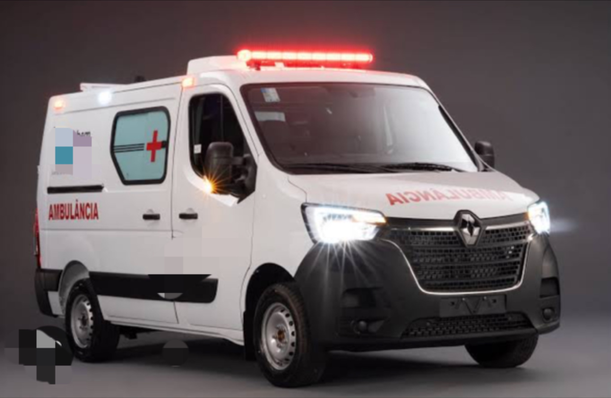
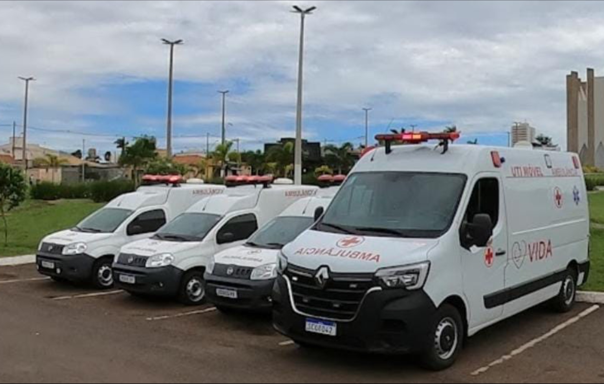
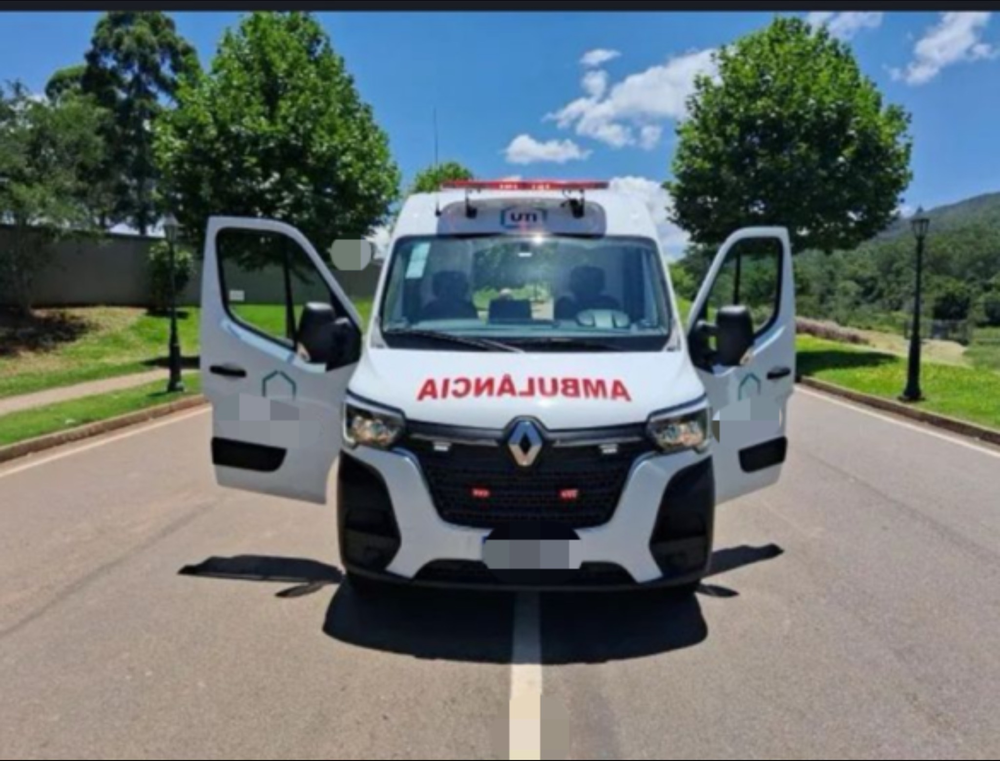
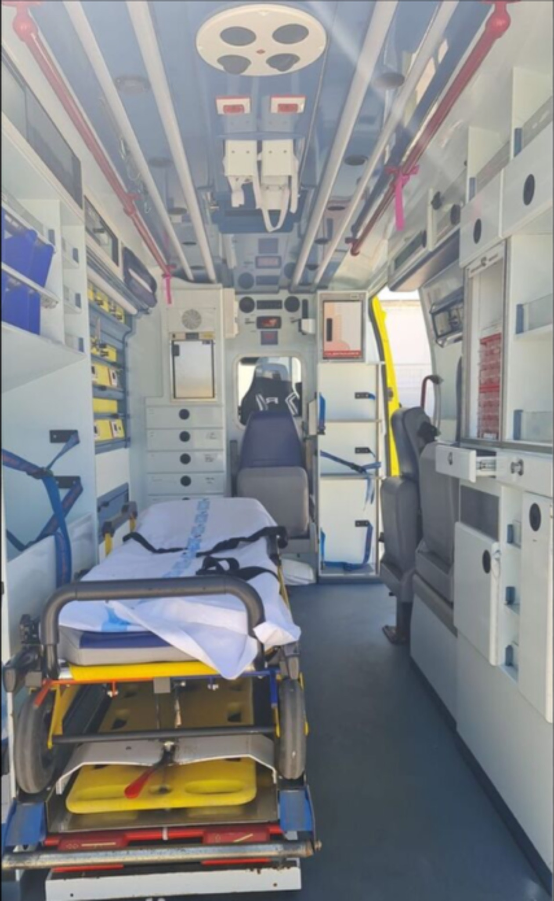
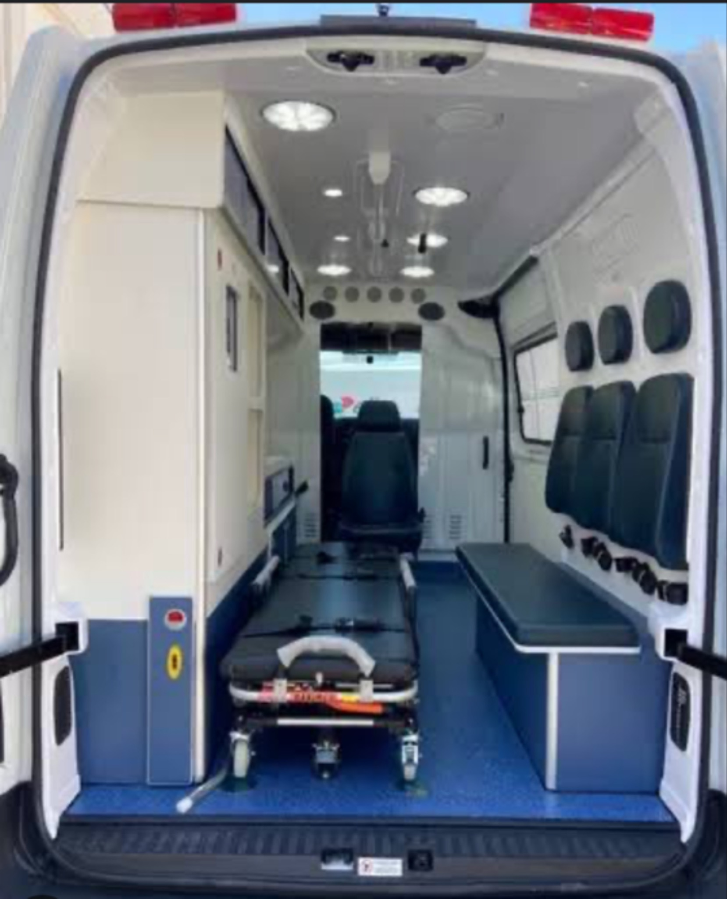
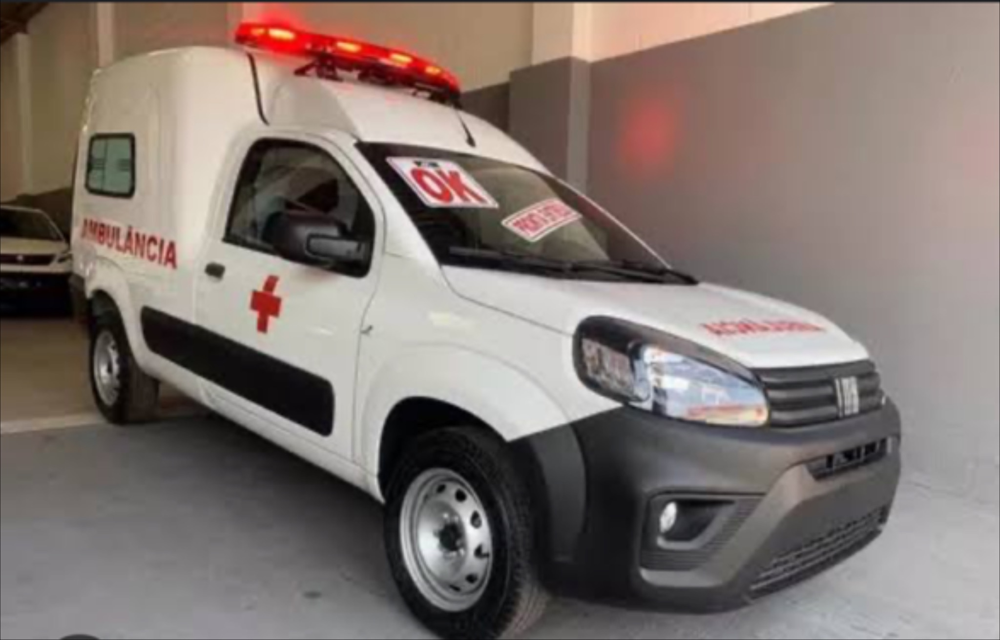
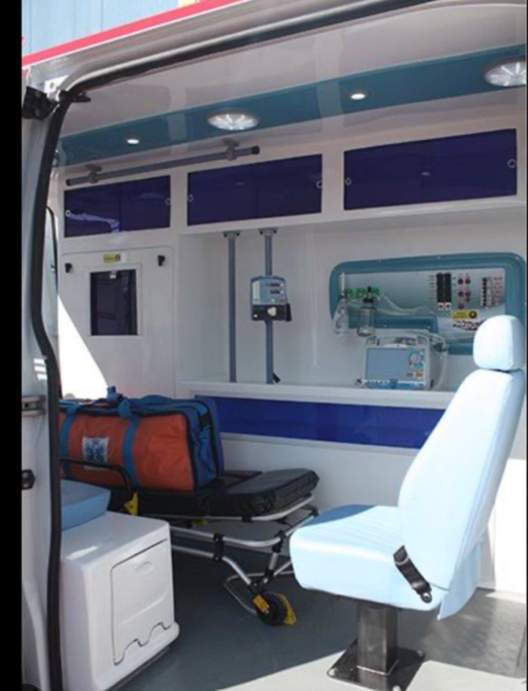
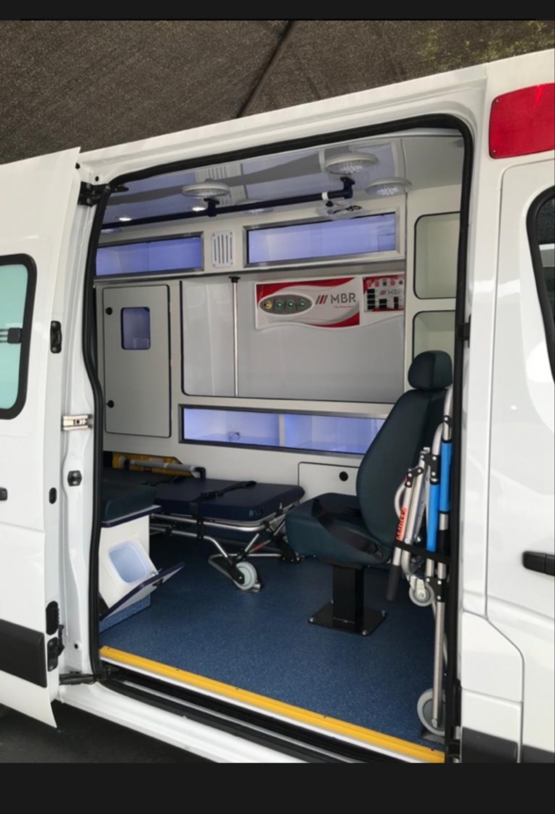
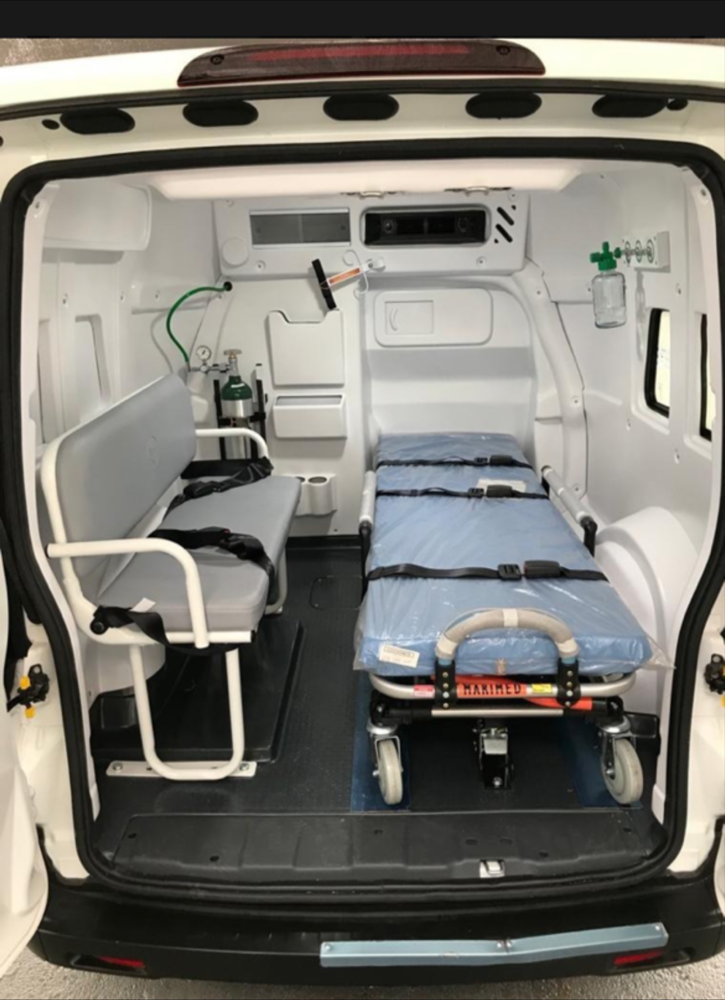
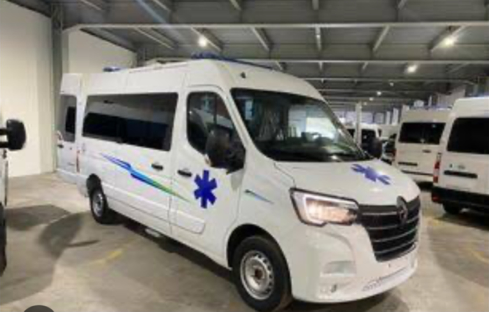

UTI movel, transporte de paciente e locacao 24h
24h
Operacao voltada para quem precisa de disponibilidade, agilidade e fluxo continuo.
Jatai e regiao
Atuacao local com cobertura para cidades estrategicas do sudoeste goiano.
Hospitais, residencias, eventos e empresas
Servicos adaptados ao cenario clinico, logistico ou institucional.
Mais Vida para cada deslocamento que exige resposta rapida e cuidado real.
A Mais Vida Ambulancias atua em Jatai e regiao com atendimento serio, estrutura preparada e uma operacao pensada para hospitais, residencias, eventos, empresas e prefeituras. A proposta e simples: oferecer deslocamento com seguranca, acolhimento e prontidao quando seu ente querido ou sua operacao nao podem esperar.
Atalhos rapidos para iniciar o contato:

Uma estrutura visualmente clara, profissional e pensada para transmitir confianca desde a primeira busca no Google.

Presenca de frota
Imagem real da operacao para reforcar autoridade e capacidade de atendimento.
UTI movel
Suporte para deslocamentos que pedem mais controle, estrutura interna e ambiente preparado.
Transporte de paciente
Remocoes entre hospitais, residencias, exames, altas e deslocamentos planejados.
Cobertura de eventos
Ambulancia para eventos com presenca profissional e suporte para diferentes tipos de demanda.
Locacao institucional
Atendimento para empresas, prefeituras e contratos que exigem confiabilidade operacional.
Quem e a Mais Vida
Atendimento serio, humano e preparado para cuidar de quem precisa de deslocamento com seguranca.
A Mais Vida Ambulancias trabalha com amor e responsabilidade para dar mais tranquilidade ao seu ente querido nos momentos em que o cuidado nao pode esperar. A empresa atende 24 horas com foco em remocoes, UTI movel, transporte de pacientes e locacoes para diferentes tipos de necessidade.
A operacao atende hospitais, residencias, eventos, empresas, prefeituras e outras demandas especiais, sempre com compromisso com seriedade, disponibilidade e suporte regional. Em Jatai e cidades vizinhas, a Mais Vida busca ser referencia para quem precisa de ambulancia com atendimento confiavel.
- Atendimento 24h para situacoes urgentes, programadas e operacionais.
- Locacao de ambulancias para empresas, eventos, prefeituras e outras demandas recorrentes.
- Transporte de pacientes com foco em cuidado, seguranca e resposta rapida.

Prontidao em Jatai e regiao
Frota preparada para atender remocoes, cobertura de eventos, locacoes e deslocamentos com suporte 24 horas.
Frentes de atendimento
Conheca os principais atendimentos da Mais Vida para pacientes, familias, empresas, eventos e orgaos publicos.
A empresa atua em diferentes cenarios de saude e operacao, oferecendo ambulancias e suporte para deslocamentos que pedem organizacao, cuidado e disponibilidade.

Suporte monitorado
UTI movel para deslocamentos que pedem mais estrutura e ambiente tecnico.
A Mais Vida atende situacoes em que o transporte precisa de mais estrutura interna, organizacao e suporte para oferecer um deslocamento mais seguro e tranquilo para o paciente e para a familia.
- Transferencias entre hospitais e unidades de saude.
- Deslocamentos com foco em estabilidade e estrutura interna.
- Atendimento pensado para demandas que exigem mais cuidado durante o percurso.

Remocao planejada
Transporte de paciente para residencia, hospital, exames e altas com linguagem direta e objetiva.
Esse atendimento e indicado para remocoes e deslocamentos planejados, ajudando pacientes e familias em transferencias entre hospitais, residencias, exames, altas e outras necessidades de transporte com apoio profissional.
- Atendimento para residencias, hospitais e deslocamentos agendados.
- Estrutura pronta para diferentes rotas e necessidades do percurso.
- Suporte para quem precisa de ambulancia com mais previsibilidade e cuidado.

Presenca em campo
Cobertura de eventos para operacoes que precisam unir presenca visual, prontidao e confianca.
A Mais Vida tambem atende eventos e operacoes temporarias com ambulancias preparadas para dar suporte no local, ajudando organizadores e empresas a contar com mais seguranca e prontidao durante a cobertura.
- Feiras, eventos corporativos, acoes externas e operacoes especiais.
- Presenca profissional para reforcar seguranca e organizacao no local.
- Atendimento para contratos pontuais ou recorrentes.
Operacao institucional
Locacao de ambulancias para empresas, prefeituras e contratos que precisam de mais previsibilidade operacional.
A empresa tambem trabalha com locacao e aluguel de ambulancias para empresas, prefeituras e outras instituicoes que precisam de estrutura confiavel para operacoes continuas ou atendimentos dedicados.
- Atendimento para contratos com empresas, orgaos publicos e demandas dedicadas.
- Frota preparada para apoiar operacoes com mais previsibilidade.
- Solucao pensada para quem precisa de aluguel ou locacao de ambulancia na regiao.
Estrutura interna
Leito, monitoracao e compartimentos
Estrutura que reforca prontidao, organizacao e cuidado tecnico durante o atendimento.
Ambulancias reais da operacao
Frota usada pela empresa para atender hospitais, residencias, eventos e locacoes.
Atendimento com mais confianca
Imagens que ajudam familias, empresas e instituicoes a entender melhor a estrutura disponivel.
Os interiores das ambulancias ajudam a mostrar organizacao, preparo e cuidado com cada atendimento.
Para quem procura ambulancia, UTI movel ou transporte de paciente, ver a estrutura interna transmite mais seguranca. Os ambientes mostram um atendimento preparado para diferentes tipos de deslocamento e suporte.

Interior tecnico
Ambiente organizado para transmitir confianca ja no primeiro olhar.



Cobertura regional
Atendimento com base em Jatai e cobertura para cidades estrategicas da regiao.
A Mais Vida atende Jatai e diversas cidades da regiao para remocoes, UTI movel, transporte de pacientes, cobertura de eventos e locacoes institucionais. Essa presenca regional amplia o alcance para quem precisa de ambulancia com disponibilidade e resposta rapida.
Solicite atendimento
Informe a cidade, o tipo de servico e os detalhes da necessidade para solicitar atendimento da Mais Vida.
Se voce precisa de UTI movel, transporte de paciente, cobertura para evento ou locacao de ambulancia, preencha os dados abaixo para preparar sua solicitacao por e-mail com mais rapidez e clareza.
Servicos promovidos
Ambulancia, UTI movel, transporte de paciente, locacao e aluguel de ambulancia.
Endereco
Rua Capitao Serafim de Barros, 801, Centro - Jatai, GO 75800-018.
Funcionamento
Plantao 24h para demandas operacionais e institucionais.
Canais disponiveis no briefing
maisvidambulancias@gmail.com e mariovilelafilho@hotmail.com
Compromisso da Mais Vida
Empresa seria, com trabalho feito com amor para dar mais vida ao seu ente querido e atender locacoes para empresas, prefeituras e outras operacoes especiais.